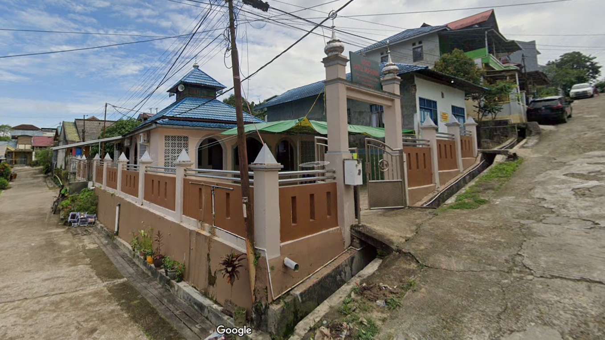
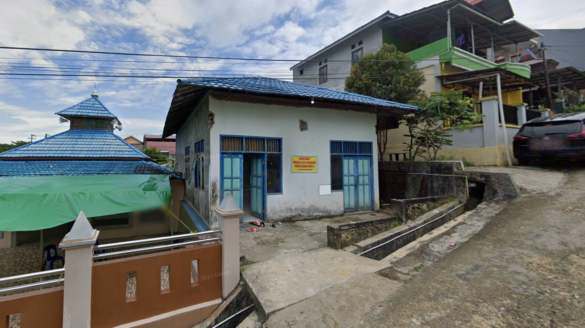
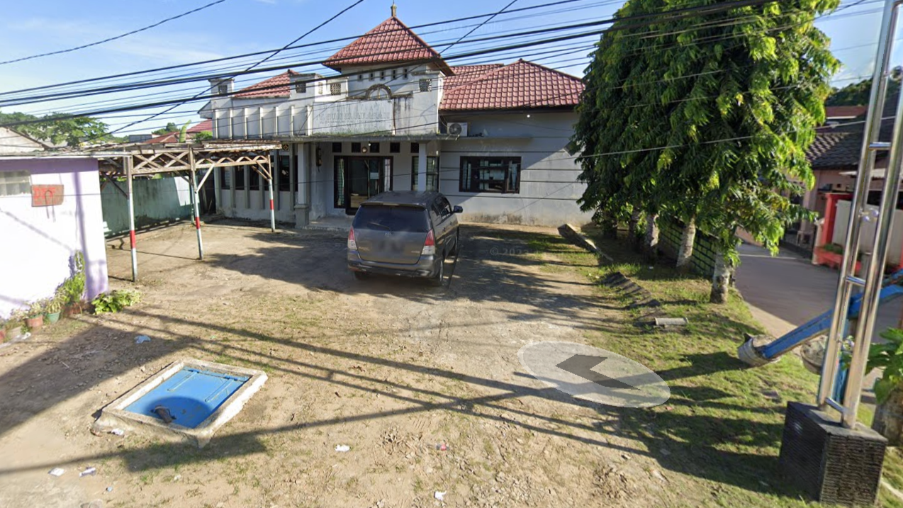

Fasilitas Umum

Masjid ini biasa digunakan warga setempat untuk beribadah
Masjid Baitul Muhajirin
Masjid ini biasa digunakan warga setempat untuk beribadah

Gedung ini biasa digunakan warga untuk rapat dan kegiatan lainnya
Gedung Serbaguna
Gedung ini biasa digunakan warga untuk rapat dan kegiatan lainnya

Polder Air
Polder ini untuk menampung air hujan dan aliran sistem agar diresap tanah

KB Flamboyan Mekar
KB ini biasanya digunakan anak-anak untuk belajar dan juga bermain